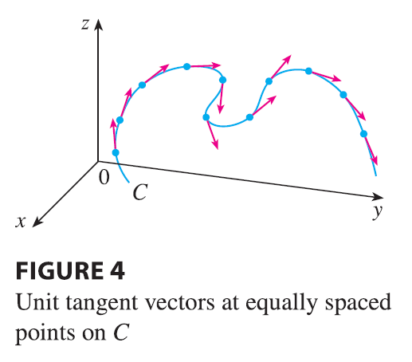

A parametrization \(\mathbf{r}(t)\) is called smooth on an interval I if \(\mathbf{r}'\) is continuous and \(\mathbf{r}'(t) \neq \mathbf{0}\) on I. A curve is called smooth if it has a smooth parametrization. A smooth curve has no sharp corners or cusps; when the tangent vector turns, it does so continuously.
If C is a smooth curve defined by the vector function \(\mathbf{r}\), recall that the unit tangent vector \(\mathbf{T}(t)\) is given by \[ \mathbf{T}(t) = \frac{\mathbf{r}'(t)}{|\mathbf{r}'(t)|} \]

and indicates the direction of the curve. From Figure 4 you can see that \(\mathbf{T}(t)\) changes direction very slowly when C is fairly straight, but it changes direction more quickly when C bends or twists more sharply.
The curvature of C at a given point is a measure of how quickly the curve changes direction at that point. Specifically, we define it to be the magnitude of the rate of change of the unit tangent vector with respect to arc length. (We use arc length so that the curvature will be independent of the parametrization.) Because the unit tangent vector has constant length, only changes in direction contribute to the rate of change of \(\mathbf{T}\).
Definition 8 The curvature of a curve is \[ \kappa = \left| \frac{d\mathbf{T}}{ds} \right| \] where T is the unit tangent vector.
The curvature is easier to compute if it is expressed in terms of the parameter \(t\) instead of \(s\), so we use the Chain Rule (Theorem 13.2.3, Formula 6) to write \[ \frac{d\mathbf{T}}{dt} = \frac{d\mathbf{T}}{ds} \frac{ds}{dt} \quad \text{and} \quad \kappa = \left| \frac{d\mathbf{T}}{ds} \right| = \left| \frac{d\mathbf{T}/dt}{ds/dt} \right| \] But \(ds/dt = |\mathbf{r}'(t)|\) from Equation 7, so
\[ \kappa(t) = \frac{|\mathbf{T}'(t)|}{|\mathbf{r}'(t)|} \tag{9} \]
EXAMPLE 3 Show that the curvature of a circle of radius \(a\) is \(1/a\).
The result of Example 3 shows that small circles have large curvature and large circles have small curvature, in accordance with our intuition. We can see directly from the definition of curvature that the curvature of a straight line is always 0 because the tangent vector is constant.
Although Formula 9 can be used in all cases to compute the curvature, the formula given by the following theorem is often more convenient to apply.
Theorem 10 The curvature of the curve given by the vector function \(\mathbf{r}\) is \[ \kappa(t) = \frac{|\mathbf{r}'(t) \times \mathbf{r}''(t)|}{|\mathbf{r}'(t)|^3} \]
PROOF Since \(\mathbf{T} = \mathbf{r}'/|\mathbf{r}'|\) and \(|\mathbf{r}'| = ds/dt\), we have \[ \mathbf{r}' = |\mathbf{r}'|\mathbf{T} = \frac{ds}{dt}\mathbf{T} \] so the Product Rule (Theorem 13.2.3, Formula 3) gives \[ \mathbf{r}'' = \frac{d^2s}{dt^2}\mathbf{T} + \frac{ds}{dt}\mathbf{T}' \] Using the fact that \(\mathbf{T} \times \mathbf{T} = \mathbf{0}\), we have \[ \mathbf{r}' \times \mathbf{r}'' = \left(\frac{ds}{dt}\right)^2(\mathbf{T} \times \mathbf{T}') \] Now \(|\mathbf{T}(t)| = 1\) for all \(t\), so \(\mathbf{T}\) and \(\mathbf{T}'\) are orthogonal by Example 13.2.4. Therefore, by Theorem 12.4.9, \[ |\mathbf{r}' \times \mathbf{r}''| = \left(\frac{ds}{dt}\right)^2 |\mathbf{T} \times \mathbf{T}'| = \left(\frac{ds}{dt}\right)^2 |\mathbf{T}||\mathbf{T}'| = \left(\frac{ds}{dt}\right)^2 |\mathbf{T}'| \] Thus \[ |\mathbf{T}'| = \frac{|\mathbf{r}' \times \mathbf{r}''|}{(ds/dt)^2} = \frac{|\mathbf{r}' \times \mathbf{r}''|}{|\mathbf{r}'|^2} \] and \[ \kappa = \frac{|\mathbf{T}'|}{|\mathbf{r}'|} = \frac{|\mathbf{r}' \times \mathbf{r}''|}{|\mathbf{r}'|^3} \]
EXAMPLE 4 Find the curvature of the twisted cubic \(\mathbf{r}(t) = \langle t, t^2, t^3 \rangle\) at a general point and at \((0, 0, 0)\).
For the special case of a plane curve with equation \(y=f(x)\), we choose \(x\) as the parameter and write \(\mathbf{r}(x) = x\mathbf{i} + f(x)\mathbf{j}\). Then \(\mathbf{r}'(x) = \mathbf{i} + f'(x)\mathbf{j}\) and \(\mathbf{r}''(x) = f''(x)\mathbf{j}\). Since \(\mathbf{i} \times \mathbf{j} = \mathbf{k}\) and \(\mathbf{j} \times \mathbf{j} = \mathbf{0}\), it follows that \(\mathbf{r}'(x) \times \mathbf{r}''(x) = f''(x)\mathbf{k}\). We also have \(|\mathbf{r}'(x)| = \sqrt{1+[f'(x)]^2}\) and so, by Theorem 10,
\[ \kappa(x) = \frac{|f''(x)|}{[1+(f'(x))^2]^{3/2}} \tag{11} \]
EXAMPLE 5 Find the curvature of the parabola \(y=x^2\) at the points \((0, 0)\), \((1, 1)\), and \((2, 4)\).